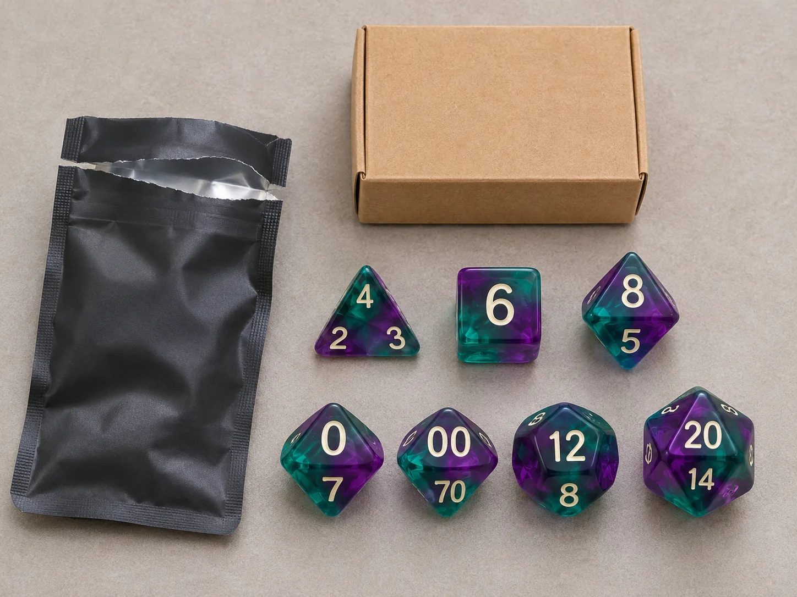

Quick answer: should a game store stock mystery dice packs?
A mystery dice pack can make the act of choosing a set feel like a small reveal: the buyer knows the product category and guaranteed contents, but not the exact colorway or collectible design inside. For a game store, that format may create a different purchase occasion from a customer selecting a specific purple resin set or metal D20. It can be positioned as a gift, counter item, event add-on, or collection piece.
The important word is may. A product launch or a lively unboxing video does not prove that blind-pack dice will sell through in every shop. Store format, local player mix, price, display placement, product quality, and customer trust all matter. This buyer guide offers a practical way to evaluate mystery dice packs for game stores, compare blind bag RPG dice with regular sets, and make a sourcing decision using evidence instead of hype.
What current D&D and tabletop releases show (and what they do not)
As of November 11, 2026, collectible dice packaging is visible in current tabletop product announcements. ICv2 reported that Sirius Dice’s Dungeons & Dragons: Magic & Mysteries Treasure Packs add a collectible seven-die set, a cloth dice bag, and an enamel pin; the announcement describes multiple designs and rarity levels. ICv2 also reported a separate Dungeons & Dragons x World of Warcraft accessories line, including themed dice products and later collectible formats. The D&D Beyond release overview lists November 17, 2026 as the wide-release date for the World of Warcraft crossover book, after early access began November 3. These are licensed products from other companies, not products supplied by DND Custom Dice. Read the [Treasure Packs announcement](https://icv2.com/articles/news/view/63632/sirius-dice-announces-d-d-magic-mysteries-treasure-packs), [World of Warcraft accessories announcement](https://icv2.com/articles/news/view/63562/sirius-dice-announces-dungeons-dragons-world-warcraft-accessories-line), and [official D&D release overview](https://www.dndbeyond.com/posts/2215-d-d-vision-keynote-recap-world-of-warcaft-dark-sun).
ICv2 has also described 2026 as a strong year for gaming accessories overall. That is a broad hobby-market signal, not a measured sales report for mystery D&D dice packs specifically. The distinction matters: announcements tell a buyer what publishers and manufacturers are choosing to develop; they do not disclose sell-through at your store, repeat purchase rates, or the profit a retailer will keep after freight and operating costs. Treat the news as a reason to investigate a format, not as a forecast. See [ICv2’s accessories coverage](https://icv2.com/articles/news/view/63764/a-big-year-accessories-sales) for the broader category context.
The practical takeaway for an independent dice brand or store is to study the product architecture: clear guaranteed contents, a recognizable theme, a repeatable package, and a reason the customer might want another pack. You do not need licensed characters or copied artwork to use those principles. An original color collection, creature-inspired theme, seasonal palette, or campaign-neutral fantasy concept can create a cohesive line, provided product claims and rights are handled correctly.
Three mystery dice formats buyers should distinguish
“Blind pack” can mean several different products. Compare the guaranteed contents before comparing the outer packaging or wholesale quote.
| Format | What the customer knows | Retail use | Main buyer check |
|---|---|---|---|
| Random complete polyhedral set | The pack guarantees a full set, while color or design varies. | Gift, first set, campaign-night purchase, or collection. | Confirm the exact dice included and that every variant remains playable and readable. |
| Single mystery die | The pack guarantees one die, often a D20 or another stated shape. | Low-commitment counter item, add-on, or event favor. | Make the die type, size range, and use case obvious before purchase. |
| Multi-item collectible pack | The pack guarantees a defined combination, such as dice plus a bag, pin, coin, or other insert; the specific designs may vary. | Premium gift or franchise/collection product where authorized. | Verify every guaranteed component, pack-out process, design list, and substantiation for rarity claims. |
For a game store, a complete random set and a single mystery D20 answer different customer needs. A player who needs a full set for tonight’s session cares about function and completeness. A collector may be more interested in a distinctive finish, bag, pin, or surprise. If the package guarantees only one die, do not merchandise or describe it in a way that makes a new player believe it contains a complete set. A clear front label and a short staff explanation reduce preventable disappointment.
When blind-pack RPG dice may fit a game store
A mystery format is more likely to make sense when it adds a product role that your current assortment does not already serve. Examples include a compact gift below a premium boxed set, an easy-to-carry event item, or a collection that your regular customers have asked to explore. It is less compelling when the store has limited shelf space, customers strongly prefer choosing exact colors, or the mystery format costs more to explain than it earns in customer interest.
Useful placements to test
- Counter display: Works when the pack is small, the guaranteed contents are obvious, and staff can explain it in one sentence.
- Dice wall or RPG accessory shelf: Helps players compare the blind item with complete known-color sets rather than mistaking one for the other.
- Event table: A limited test during a learn-to-play night, campaign launch, or store event can reveal whether the product attracts players or gift buyers.
- Gift section: Can help the product reach shoppers who do not know a recipient’s preferred character or color, as long as the pack remains clearly described.
Placement is an experimental variable, not a universal rule. If one product sits at the register and another in the dice aisle, their sales are not directly comparable without noting that difference. Record display position, event activity, promotions, and stock availability alongside units sold. The same discipline is useful when planning a broader wholesale RPG dice assortment for game stores.
Build a balanced assortment instead of replacing regular dice
Blind-pack products work best as one layer of a dice assortment. Keep a reliable set of transparent, known-content options available for players who need a specific color, material, or complete polyhedral set. Then decide whether a mystery item deserves a small test alongside them.
| Assortment role | Example format | Why keep it |
|---|---|---|
| Known-content core | Complete seven-piece sets with visible color and material | Serves players who need predictable contents, readable numbers, or a chosen color. |
| Mystery or discovery | Sealed complete set or clearly labeled single-die pack | Creates a separate gift, event, or collection purchase occasion. |
| Premium choice | Metal, sharp-edge resin, liquid-core, or gift-boxed set | Gives customers who want a specific premium item an alternative to randomness. |
| Impulse add-on | Single D20, small accessory, or low-footprint product | Supports a smaller purchase without confusing it with a complete play set. |
This structure reduces a common merchandising problem: asking every customer to accept uncertainty. A known-content set offers control; a mystery pack offers discovery. Make both propositions visible. Store staff can then ask a simple question: “Would you rather choose the exact set, or try a sealed mystery design?” That question is more useful than presenting the blind pack as inherently better or more exciting.
For original product programs, theme should not be the only point of difference. Compare material, number contrast, dice shape, packaging, collection size, and retail use. Our guides to themed RPG dice assortments and 2026 RPG dice trends cover how to translate a market signal into a testable product role without assuming a trend guarantees demand.
Set customer expectations before the pack is opened
Surprise only feels fair when the customer understands the rules of the purchase. A sealed pouch can hide the specific design; it should not hide the basic facts that determine whether the product is suitable.
State what is guaranteed
For a complete set, say whether the pack contains seven dice and identify the shapes included, including whether the two D10s are a percentile pair. For a single-die product, identify the die type and any size or material variation. For a multi-item pack, list each guaranteed component. If some components vary, distinguish those variable designs from guaranteed pieces.
Explain what varies and what may repeat
Tell shoppers whether only color varies, whether designs vary, or whether the pack can contain different item categories. State whether duplicates are possible if that is part of the product design and relevant to the buying decision. Do not imply that each purchase is unique unless the production and pack-out system can support that claim.
Be careful with rarity and odds language
A rarity label is not a promise that any particular customer will receive a rare item. Avoid phrases such as “guaranteed rare,” “investment piece,” or “one in every box” unless the exact claim is substantiated by product data and the distribution process. If a program publishes pull rates or rarity ratios, keep the information consistent across the package, product listing, staff training, and supplier records. Requirements can differ by market; this article is not legal advice, so buyers should have market-specific claims reviewed before sale.
There is also a licensing question. Current licensed D&D products are examples of products that have rights-holder authorization. A retailer or dice brand should not assume that using a game logo, character, map, faction name, or copied artwork is permitted just because similar licensed products exist. Use original themes or obtain the necessary commercial permissions before manufacturing or selling branded goods.
Check landed cost and margin before choosing a retail price
Wholesale price is only one part of the cost of a mystery dice program. Add the packaging, display carton, freight, insurance, import duties or taxes where applicable, payment processing, expected damage allowance, and any local handling cost. Keep the assumptions in one worksheet so a buyer can compare the mystery item with a standard dice set on the same basis.
Illustrative example, not a market benchmark: if a pack retails for $16 and its landed product cost is $6, the simple gross margin before operating expenses is ($16 − $6) ÷ $16 = 62.5%. That is not net profit. It does not include rent, labor, payment fees, discounts, taxes, shrink, or unsold inventory. Change either the selling price or landed cost and the result changes immediately. The example is only meant to show the calculation.
For a meaningful decision, compare at least three options: a known-content standard set, the mystery product, and a premium set if your shop sells one. Compare the same cost basis and include the expected retail price, package size, display space, and any added customer-service burden. If the mystery pack needs a long explanation or generates frequent questions about contents, that is part of the operating cost even if it does not appear on the supplier invoice.
Packaging can materially change the landed cost and the way a product sells. Ask for the dice and packaging requirements separately, and confirm whether a countertop display is included or quoted as another item. The custom dice packaging guide and wholesale dice packaging article outline package-fit, display, and MOQ questions to resolve before a bulk order.
Run a small pilot and measure what actually happens
A pilot should answer one or two specific questions, not try to prove that mystery packaging is universally successful. For example: “Will our regular RPG customers buy a sealed complete set at this price?” or “Does a counter display produce incremental sales, or does it simply replace known-content sets?” Keep the test small enough that unsold units do not create a serious cash or storage problem.
A practical pilot sequence
- Choose a clear baseline. Record sales of comparable known-content sets during a recent period, including promotions and stockouts.
- Define the test. Note the mystery SKU, quantity received, retail price, display location, start date, and any planned event or promotion.
- Train staff briefly. Make sure every employee can explain guaranteed contents, what varies, and whether duplicates are possible.
- Review on a fixed date. Compare units sold with units received during the same period. Note returns, customer questions, damaged packs, and requests for specific designs.
- Decide what to change. Reorder, adjust placement or signage, request a packaging change, or discontinue the item based on the store’s own targets.
One simple metric is period sell-through: units sold divided by units received during the measurement period. If a store receives 20 packs and sells 7 during its first 30 days, the illustrative period sell-through is 7 ÷ 20 = 35%. This is a calculation example, not a target or industry average. Make sure the time window, beginning stock, replenishment, returns, and promotions are recorded consistently. Shopify’s [inventory formula reference](https://www.shopify.com/blog/inventory-formulas) explains sell-through and related retail inventory calculations.
Pair sell-through with a few practical observations:
- Did the product attract new buyers, existing dice collectors, gift shoppers, or event participants?
- Did customers understand that the specific design was random?
- Were there complaints about repeated designs, unclear contents, or missing pieces?
- Did the mystery product add sales, or did it displace a known-content set?
- Did the display remain full and visible, or did it require frequent staff attention?
- Could you reorder the same specification, or would a new assortment create different customer expectations?
Do not over-interpret a small sample. A product can sell out because you stocked very few units; that does not automatically mean a large reorder is appropriate. Conversely, a slow first week may reflect poor placement or unclear signage rather than a lack of customer interest. Preserve the notes so that the next order is based on what was tested.
Review the actual dice and package, not only a digital mockup
Before placing a larger order, inspect an opened sample and a sealed pack. Check that the sealed presentation matches the product description, the pack is difficult to open accidentally, and the contents are protected in transit. Then inspect the dice as a customer would: read the numbers under normal store lighting, check that the material and finish are consistent, and confirm that the set contains the advertised shapes.

For every variant in a collection, examine enough samples to understand the range of colors, number contrast, inclusions, and finish. A single attractive sample cannot prove that the full run will look consistent. If the product contains several dice of different shapes, check that the theme remains legible across each shape; a decorative effect that looks clear on a large D20 may make smaller dice harder to read.
Review packaging from both shelf and shipping perspectives. Does the pack hang, stand, or fit the intended display? Can a customer identify the number of dice without opening it? Is the product name easy to find? Does the display carton state the number of packs it holds and make restocking straightforward? Does the outer carton protect the product during international transport? A physical sample lets you check these details in a way a screen rendering cannot.
If you are building a private-label or original-theme program, compare the custom DND dice materials, logo, packaging, and MOQ guide. Buyers can also request a dice sample kit to evaluate material, finish, and readability before selecting a production direction.
What to include in a mystery dice supplier brief
A supplier can give a more useful answer when the buyer explains the product and distribution plan. A vague request for “a random dice set” leaves unresolved questions about how many designs exist, what each pack contains, how variants are packed, and which packaging is included. Prepare a short brief with the following details:
- Buyer and sales channel: game store, distributor, dice brand, subscription box, event organizer, or RPG publisher.
- Product format: complete seven-piece set, single D20, mixed-die pack, or dice plus other guaranteed items.
- Variant plan: number of designs, colors, materials, whether variants can repeat, and whether any design is a limited run.
- Dice requirements: material, dimensions, number style, readability, finish, inclusions, and any custom logo or symbol.
- Randomization and pack-out: how the variants are assigned, how the team prevents missing pieces, and what production records are available.
- Packaging: individual pouch or box, insert, display carton, product label, barcode area, and outer-carton quantity.
- Order plan: target quantity by SKU or variant, sample quantity, first-order range, and expected reorder window.
- Market and timing: delivery country, target launch date, sales channel, and any market-specific package copy or compliance review.
- Rights status: confirmation that submitted logos, characters, names, and artwork are original or properly authorized for commercial use.
Ask for the dice MOQ and packaging MOQ separately. A buyer may be able to test an existing dice style in a lower quantity while a custom printed display has a different setup or print minimum. Ask whether variants can share a packaging structure, whether a mixed-SKU display carton can be assembled, how samples are approved, what the stated lead time includes, and what happens if a pack is missing a component. The wholesale dice MOQ guide covers the variables that can change minimum quantities.
To move from research to a sourcing conversation, prepare your theme, material preference, estimated quantities, packaging concept, destination, and timing. You can also browse the wholesale dice catalog for existing directions before requesting a custom program. DND Custom Dice provides quote-based sourcing guidance; availability, MOQ, and production details should be confirmed for the specific project rather than assumed from a general article.
A simple decision rule for retailers
Consider a mystery dice pack only if you can answer “yes” to all four questions:
- Can we describe the guaranteed contents in one clear sentence?
- Does the product serve a customer or gift role that our current assortment does not already cover?
- Can we test the item at a quantity and landed cost our store can manage?
- Can we explain randomness, possible repeats, and any rarity information accurately?
If one answer is unclear, resolve it before ordering. A mystery package should make the product more engaging without making the purchase less understandable. The strongest buying plan keeps regular dice sets visible, tests the new format on a defined basis, and lets real customer response determine whether the product earns more shelf space.
Mystery dice packs FAQ
What is a mystery dice pack?
It is a sealed dice product where the buyer does not know the exact colorway, design, or collectible variant before opening. The package should still state guaranteed contents, such as whether it includes a complete seven-piece polyhedral set or a single die.
Are blind-pack RPG dice suitable for new players?
They can be a gift or discovery purchase, but a new player needs to know whether the pack contains a complete playable set. Keep known-content sets available for shoppers who want a specific color or exact contents.
How should a game store test mystery dice packs?
Begin with the smallest practical pilot, record received and sold units by SKU, note the price and display position, and track customer questions, duplicates, returns, and stockouts. Compare the results with your own margin and inventory goals before reordering.
Do rarity labels guarantee a rare dice pull?
No. A rarity tier describes the product lineup, not an individual pack's guaranteed contents. Use only substantiated claims and check any odds or consumer-protection requirements that apply in the sales markets.
What should I ask a mystery dice supplier?
Confirm guaranteed pack contents, variant count, randomization and pack-out controls, sample approval, dice and packaging MOQs, SKU and barcode handling, carton quantities, lead time, and the process for missing or damaged components.
Can blind packs replace regular dice sets in a store?
They are usually best treated as one role in a wider assortment. Continue to offer known-content, complete sets for players who need a specific product or do not want a random design.
Sources used for this buyer guide
- ICv2: Sirius Dice Announces D&D: Magic & Mysteries Treasure Packs — product format and announced collectible components.
- ICv2: Sirius Dice Announces Dungeons & Dragons x World of Warcraft Accessories Line — a separate licensed accessory line and planned formats.
- ICv2: A Big Year for Accessories Sales — broader tabletop accessory context; it is not a sales forecast for any one dice product.
- D&D Beyond: D&D Vision Keynote Recap — official timing and overview of the D&D: World of Warcraft release.
- Sirius Dice: Treasure Packs collection — official product listings for the maker’s collectible pack category.
- Shopify: 5 Common Inventory Management Formulas — sell-through calculation and related inventory measures.
Product announcements describe specific announced products. The retail assortment, sample-review, and pilot recommendations in this article are editorial buying guidance, not a claim that a particular product will sell or that any supplier offers a specific random-pack service. Confirm current availability, specifications, rights, and terms with the relevant rights holder, distributor, or manufacturer.
Plan a dice assortment you can test and reorder.
Share your buyer type, dice format, quantity range, packaging direction, delivery market, and target date. We can help clarify sample options, MOQ assumptions, and the information needed for a project-specific quote.
Continue with the bulk DND dice buying guide for game stores, compare wholesale dice packaging formats, or review the custom dice packaging options before preparing a supplier brief.